La creatina es, junto con la proteína, uno de los suplementos deportivos más estudiados que existen. A diferencia de muchos productos que prometen mucho y aportan poco, la creatina tiene décadas de investigación detrás que respaldan sus efectos principales.
Qué es exactamente
La creatina es una sustancia que el propio cuerpo produce de forma natural, principalmente en el hígado y los riñones, y que también se obtiene de alimentos como la carne roja y el pescado. Se almacena sobre todo en el músculo, donde actúa como una reserva rápida de energía para esfuerzos cortos e intensos.
Qué efectos tiene en el entrenamiento
El efecto mejor documentado de la creatina es el aumento de la capacidad de realizar esfuerzos breves y explosivos de forma repetida: series de fuerza, sprints cortos, saltos. Al aumentar la reserva de energía disponible en el músculo, permite entrenar con algo más de volumen o intensidad antes de fatigarse.
Con el tiempo, ese pequeño margen extra en cada sesión se traduce en mejoras de fuerza y masa muscular algo mayores que entrenando sin ella, siempre dentro de un programa de entrenamiento y alimentación ya bien planteado. La creatina complementa el trabajo, no lo sustituye: si entrenas con metodologías de alta intensidad como el Heavy Duty, ese margen extra de energía se nota especialmente en las series al fallo.
- Mejora el rendimiento en esfuerzos cortos e intensos (fuerza, sprints, saltos).
- Puede favorecer una ligera retención de agua intramuscular los primeros días de uso.
- No tiene un efecto relevante en esfuerzos de resistencia muy prolongados.

Cómo se suele tomar
La forma más estudiada y sencilla es la creatina monohidrato, tomada en una cantidad constante cada día (no hace falta ciclarla ni suspenderla periódicamente). Muchas personas empiezan a notar los efectos a las pocas semanas de uso continuado, aunque la respuesta varía de una persona a otra.
Consideraciones antes de empezar
Es un suplemento con un perfil de seguridad ampliamente estudiado en población sana, pero como con cualquier suplemento, conviene tener en cuenta el contexto personal: hidratación adecuada durante su uso, y especial precaución si existe algún problema renal previo o cualquier duda médica relevante, en cuyo caso lo correcto es consultarlo antes con un profesional sanitario.
¿Quieres ir más a fondo?
La guía completa incluye cálculo de dosis según tu peso, tablas de alimentos, mitos resueltos y protocolos de toma diaria.
Pago seguro · descarga inmediata en PDF
Este artículo tiene fines informativos y no sustituye el consejo de un nutricionista o médico deportivo, especialmente si tienes alguna condición de salud previa.